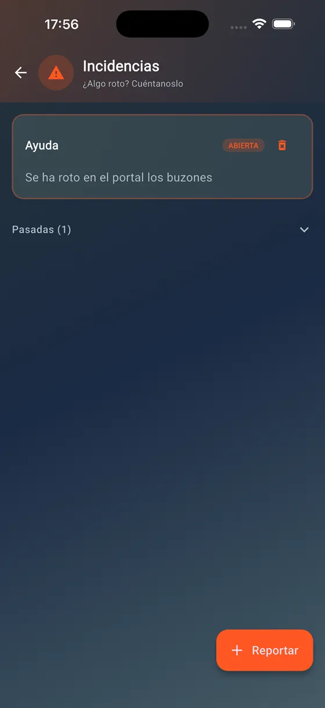

UrbaPadel
UrbaPadel
 TuMenu
TuMenu
 GodaFly
GodaFly
 Zapeo
Zapeo
UrbaPadel
4 urbanizaciones4 communitiesLas reservas de tu urbanización, sin grupos de WhatsApp ni hojas en el portal. Your community's bookings, without WhatsApp groups or paper on the noticeboard.
Pistas de pádel y salas comunes con turnos y normas de cada comunidad, incidencias con foto y comunicados de la junta. La versión 2 salió en junio de 2026: migré los datos en producción y avisé a más de 150 vecinos el mismo día. Padel courts and shared rooms with each community's slots and rules, issue reports with photos and announcements from the board. Version 2 shipped in June 2026: I migrated production data and notified more than 150 residents the same day.
Flutter · Firebase · Cloud Functions


